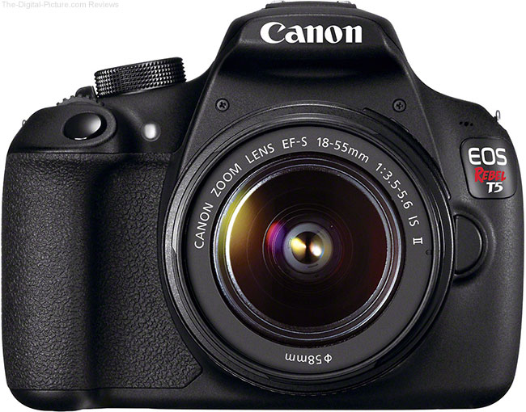

Canon Modern camera
From compact camera’s offering lightweight, fixed lens flexibility in the palm of your hand to DSLRs and mirrorless cameras with state-of-the-art features and exceptional versatility, Canon’s range of cameras offers everyone a route to creativity. The following provides a partial list of products manufactured under the Canon bra Other products manufactured and/or service-rendered under the Canon brand may not appear here. Such products may include office or industrial application devices, LAN products , semiconductor and precision products.
Video Production
Video production is the process of producing video content. It is the equivalent of filmmaking, but with images recorded digitally instead of on film stock. here are three stages of video production: pre-production, production, and post-production. Pre-production involves all of the planning aspects of the video production process before filming begins. This includes scriptwriting, scheduling, logistics, and other administrative duties. Production is the phase of video production which captures the video content (moving images / videography) and involves filming the subject(s) of the video. Post-production is the action of selectively combining those video clips through video editing into a finished product that tells a story or communicates a message in either a live event setting (live production), or after an event has occurred (post-production)
Radio station
A radio station is a set of equipment necessary to carry on communication via radio waves. Generally, it is a receiver or transmitter or transceiver, an antenna, and some smaller additional equipment necessary to operate them. Radio stations play a vital role in communication technology as they are heavily relied on to transfer data and information- across the world. More broadly, the definition of a radio station includes the aforementioned equipment and a building in which it is installed. Such a station may include several "radio stations" defined above (i.e. several sets of receivers or transmitters installed in one building but functioning independently, and several antennas installed on a field next to the building). This definition of a radio station is more often referred to as a transmitter site, transmitter station, transmission facility or transmitting station.